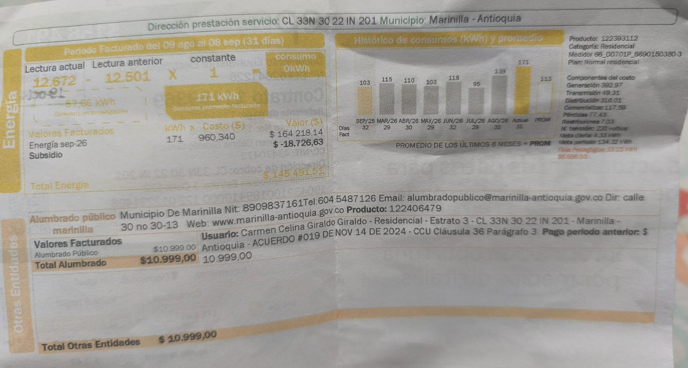
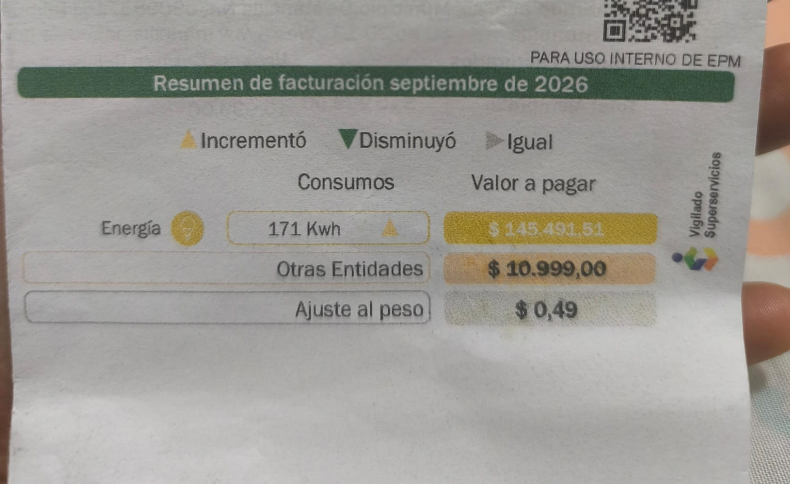

Liquidación de la factura real
Los siguientes valores corresponden a los datos reales registrados en la última factura de servicio de energía eléctrica del hogar. Son datos exactos tomados directamente de la factura, no estimaciones.
171
kWh facturados$960,34
COP por kWh-$18.726,63
COP de descuento$145.491,51
COP cancelados| Concepto de facturación | Fórmula / Base de cálculo | Valor liquidado (COP) |
|---|---|---|
| Costo base del consumo de energía activa | 171 kWh × $960,34 COP/kWh | $164.218,14 COP |
| Subsidio residencial aplicado | Alivio económico asignado según estrato socioeconómico | -$18.726,63 COP |
| Total neto pagado en la factura: | $145.491,51 COP | |
| Verificación: $164.218,14 − $18.726,63 = $145.491,51 COP. El cálculo es exactamente coherente con los datos de la factura. | ||
Historial de consumo según la factura de EPM
Las facturas de energía de EPM incluyen el gráfico «Histórico de consumos (kWh) y promedio» con los últimos períodos. La siguiente tabla reproduce con fidelidad los valores de ese gráfico, tal como aparecen en la factura física correspondiente al período de septiembre de 2026.
| Período de facturación | Días facturados | Consumo (kWh) | Contexto | |
|---|---|---|---|---|
| Variación respecto al período anterior | Relación con el precio de bolsa | |||
| Sep 2025 | 32 | 103 | — (inicio del historial) | Precio de bolsa bajo |
| Mar 2026 | 29 | 115 | ▲ +12 kWh | Inicio de alza estacional |
| Abr 2026 | 29 | 110 | ▼ −5 kWh | Precio en 269 COP/kWh |
| May 2026 | 30 | 103 | ▼ −7 kWh | Precio sube a 505 COP/kWh |
| Jun 2026 | 29 | 118 | ▲ +15 kWh | Precio en 546 COP/kWh |
| Jul 2026 | 32 | 95 | ▼ −23 kWh | Precio sube a 790 COP/kWh |
| Ago 2026 | 29 | 139 | ▲ +44 kWh | Pico del precio: 946,6 COP/kWh |
| Sep 2026 Mes facturado | 31 | 171 | ▲ +32 kWh | Precio 691,5 COP/kWh · Total $145.491,51 |
| Promedio últimos 6 meses PROM EPM: | 113 kWh | Promedio calculado por EPM e impreso en la factura. El mes actual (171 kWh) supera el promedio en 58 kWh, lo que indica un incremento del 51% respecto al consumo habitual del hogar. | ||
| Fuente: Gráfico «Histórico de consumos (kWh) y promedio» impreso en la factura de energía EPM · Período 09 ago – 08 sep de 2026 · Municipio Marinilla, Antioquia · Estrato 3 · Plan Normal Residencial. | ||||
Comparación: Estimaciones de equipos vs. Factura real
Advertencia metodológica importante:
Los consumos de los cuatro equipos son estimaciones, no mediciones individuales reales. Provienen de fichas técnicas de fabricante (Nevera y Lavadora) o de potencia nominal por horas de uso (TV y portátil). El único dato real y certificado del hogar es el total de 171 kWh que aparece en la factura del servicio de energía.| Equipo | Dato base oficial | Estimación mensual (kWh) | Método |
|---|---|---|---|
| Nevera Haceb 271 L | 23,7 kWh/mes (ficha RETIQ) | 23,70 | Certificado fabricante |
| Lavadora Samsung 19 kg | 144 kWh/año (ficha Samsung) | 12,00 | 144 ÷ 12 meses |
| Televisor LG QNED 55" | 110 W (doc. técnica LG) | 3,81 | (110 W × 8h × 4,33 sem) / 1.000 |
| Portátil Lenovo ThinkPad L460 | Adaptador 65 W (Lenovo PSREF) | 12,38 | Cota máxima: (65 W × 44h × 4,33 sem) / 1.000 |
| Subtotal estimado 4 equipos: | 51,89 kWh/mes | ~30,4% del total | |
| Restante sin asignar (iluminación, módem y otros): | ~119,11 kWh/mes | ~69,6% del total | |
| Total facturado real: | 171,00 kWh/mes | 100% | |
¿Por qué existe una diferencia de aproximadamente 119 kWh entre las estimaciones de los 4 equipos y lo que refleja la factura real? Existen razones técnicas claras:
-
Iluminación general del hogar: Bombillos en cocina, baños, sala y dormitorios que se encienden varias horas diariamente. Diez bombillos LED de 9 W encendidos 5 h/día representan
(10 × 9 W × 5h × 30d) / 1.000 = 13,5 kWh/mes. -
Otros electrodomésticos no inventariados: Horno microondas, licuadora, cargadores de celulares, decodificador de televisión y especialmente el router de internet, que permanece conectado las 24 horas. Un módem de 10 W encendido todo el mes gasta
(10 W × 720 h) / 1.000 = 7,2 kWh. - El consumo real del portátil puede ser muy inferior: Si el ThinkPad L460 consume en promedio 25 W reales (no los 65 W del adaptador), su aporte mensual bajaría de 12,38 kWh a solo ~4,75 kWh, ampliando aún más la brecha no asignada.
- Diferencias entre condiciones de laboratorio y uso doméstico: Los ensayos de fabricante de la nevera y la lavadora se realizan en condiciones controladas que pueden diferir de los patrones reales del hogar (mayor frecuencia de apertura de puertas, temperatura ambiente, etc.).
Distribución estimada del consumo mensual
- ■ 4 Equipos (estimación) ~51,9 kWh
- ■ Iluminación, módem y otros ~119,1 kWh
- Total mensual facturado (dato real) 171,0 kWh
Nota: Los valores de los 4 equipos son estimaciones basadas en fichas de fabricante y potencia nominal, no mediciones individuales reales. Solo el total de 171 kWh está certificado por la empresa de servicios públicos.
Evidencia física de la factura
Las siguientes fotografías corresponden a la factura física de energía eléctrica EPM del período septiembre de 2026, donde se verifican el consumo (171 kWh), la tarifa ($960,34 COP/kWh), el subsidio y el total pagado ($145.491,51 COP).


Recomendaciones de ahorro basadas en los datos disponibles
1. Vigilar el umbral del subsidio
Con 171 kWh al mes, el hogar se encuentra muy cerca del umbral de consumo básico de subsistencia definido por la CREG (entre 130 kWh y 173 kWh según altitud del municipio). Reducir apenas 10 kWh al mes permite conservar el subsidio de $18.726,63 COP y evita que el consumo excedente se liquide a tarifa plena sin descuento.
2. Consolidar los ciclos de lavado
La ficha técnica de Samsung certifica 144 kWh/año para la lavadora WA19T6260BV bajo condiciones de prueba estándar (~4 ciclos por semana con carga completa). Si en lugar de 7 ciclos cortos diarios se realizan 3 o 4 lavados semanales con carga completa en agua fría, el consumo real puede aproximarse mejor al dato certificado, optimizando el gasto energético y el desgaste del motor.
3. Eliminar el consumo en espera
El televisor LG QNED consume menos de 0,5 W en standby, y el cargador del portátil ThinkPad continúa demandando corriente cuando está conectado sin carga. Estos consumos invisibles («vampiro») y el router Wi-Fi (encendido 24/7) pueden sumar entre 5 y 10 kWh mensuales no contabilizados en la tabla de equipos. Usar regletas con interruptor y desconectar cargadores cuando no se usan elimina este gasto sin afectar el confort.